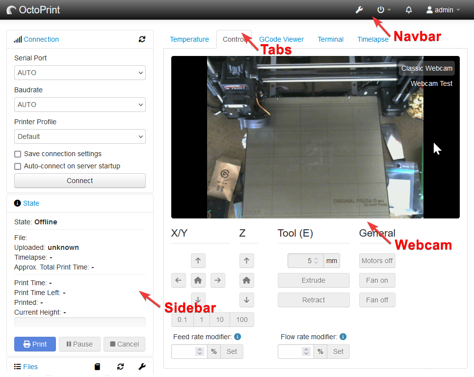
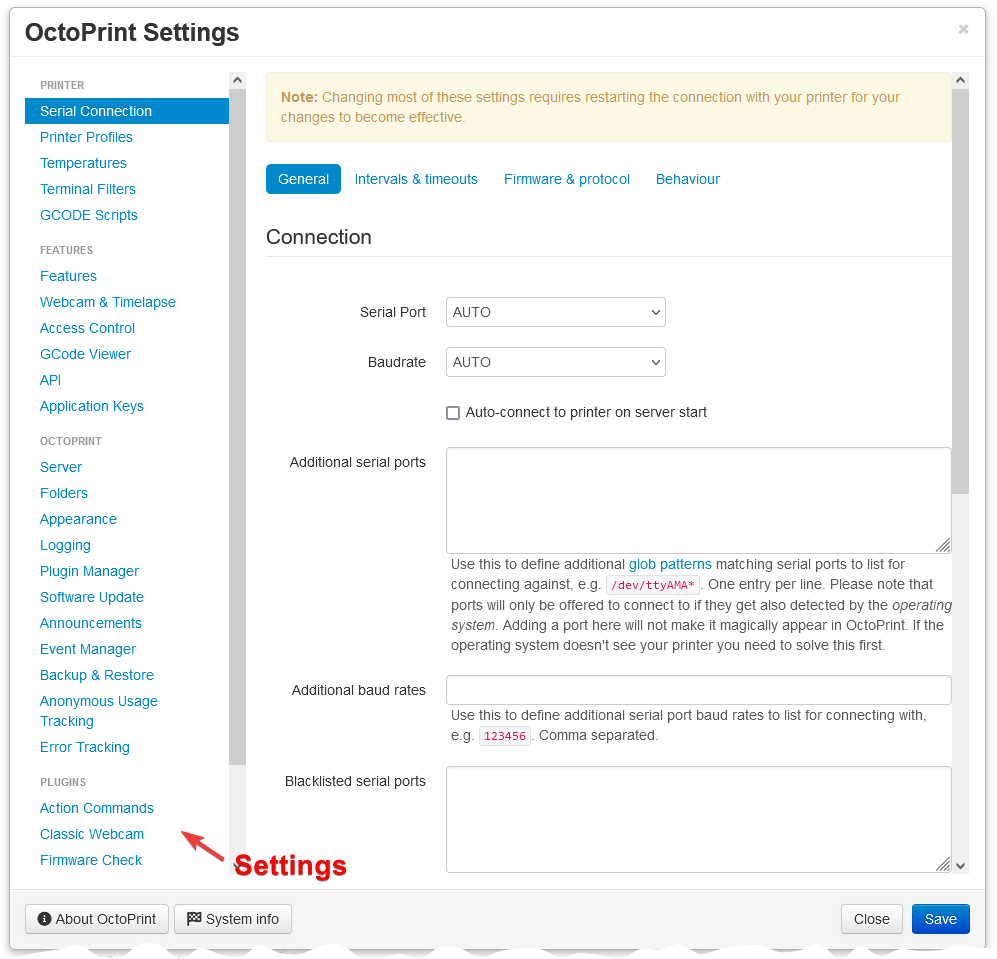

octoprint.plugin¶
-
class
octoprint.plugin.PluginSettings(settings, plugin_key, defaults=None, get_preprocessors=None, set_preprocessors=None)¶ The
PluginSettingsclass is the interface for plugins to their own or globally defined settings.It provides some convenience methods for directly accessing plugin settings via the regular
octoprint.settings.Settingsinterfaces as well as means to access plugin specific folder locations.All getter and setter methods will ensure that plugin settings are stored in their correct location within the settings structure by modifying the supplied paths accordingly.
- Parameters
-
get(path, merged=False, asdict=False)¶ Retrieves a raw value from the settings for
path, optionally merging the raw value with the default settings ifmergedis set to True.
-
get_int(path, min=None, max=None)¶ Like
get()but tries to convert the retrieved value toint. Ifminis provided and the retrieved value is less than it, it will be returned instead of the value. Likewise formax- it will be returned if the value is greater than it.
-
get_float(path, min=None, max=None)¶ Like
get()but tries to convert the retrieved value tofloat. Ifminis provided and the retrieved value is less than it, it will be returned instead of the value. Likewise formax- it will be returned if the value is greater than it.
-
set(path, value, force=False)¶ Sets the raw value on the settings for
path.
-
set_int(path, value, force=False, min=None, max=None)¶ Like
set()but ensures the value is anintthrough attempted conversion before setting it. Ifminand/ormaxare provided, it will also be ensured that the value is greater than or equal tominand less than or equal tomax. If that is not the case, the limit value (minif less than that,maxif greater than that) will be set instead.
-
set_float(path, value, force=False, min=None, max=None)¶ Like
set()but ensures the value is anfloatthrough attempted conversion before setting it. Ifminand/ormaxare provided, it will also be ensured that the value is greater than or equal tominand less than or equal tomax. If that is not the case, the limit value (minif less than that,maxif greater than that) will be set instead.
-
set_boolean(path, value, force=False)¶ Like
set()but ensures the value is anbooleanthrough attempted conversion before setting it.
-
save(force=False, trigger_event=False)¶ Saves the settings to
config.yamlif there are active changes. Ifforceis set toTruethe settings will be saved even if there are no changes. Settingstrigger_eventtoTruewill cause aSettingsUpdatedevent to get triggered.- Parameters
force (boolean) – Force saving to
config.yamleven if there are no changes.trigger_event (boolean) – Trigger the
SettingsUpdatedevent on save.
-
get_plugin_data_folder()¶ Deprecated since version 1.2.0: Replaced by
get_plugin_data_folder()
-
get_plugin_logfile_path(postfix=None)¶ Retrieves the path to a logfile specifically for the plugin. If
postfixis not supplied, the logfile will be namedplugin_<plugin identifier>.logand located within the configuredlogsfolder. If a postfix is supplied, the name will beplugin_<plugin identifier>_<postfix>.logat the same location.Plugins may use this for specific logging tasks. For example, a
SlicingPluginmight want to create a log file for logging the output of the slicing engine itself if some debug flag is set.- Parameters
postfix (str) – Postfix of the logfile for which to create the path. If set, the file name of the log file will be
plugin_<plugin identifier>_<postfix>.log, if not it will beplugin_<plugin identifier>.log.- Returns
Absolute path to the log file, directly usable by the plugin.
- Return type
-
global_get(path, **kwargs)¶ Getter for retrieving settings not managed by the plugin itself from the core settings structure. Use this to access global settings outside of your plugin.
Directly forwards to
octoprint.settings.Settings.get().
-
global_get_basefolder(folder_type, **kwargs)¶ Retrieves a globally defined basefolder of the given
folder_type. Directly forwards tooctoprint.settings.Settings.getBaseFolder().
-
global_get_boolean(path, **kwargs)¶ Like
global_get()but directly orwards tooctoprint.settings.Settings.getBoolean().
-
global_get_float(path, **kwargs)¶ Like
global_get()but directly forwards tooctoprint.settings.Settings.getFloat().
-
global_get_int(path, **kwargs)¶ Like
global_get()but directly forwards tooctoprint.settings.Settings.getInt().
-
global_set(path, value, **kwargs)¶ Setter for modifying settings not managed by the plugin itself on the core settings structure. Use this to modify global settings outside of your plugin.
Directly forwards to
octoprint.settings.Settings.set().
-
global_set_boolean(path, value, **kwargs)¶ Like
global_set()but directly forwards tooctoprint.settings.Settings.setBoolean().
-
global_set_float(path, value, **kwargs)¶ Like
global_set()but directly forwards tooctoprint.settings.Settings.setFloat().
-
global_set_int(path, value, **kwargs)¶ Like
global_set()but directly forwards tooctoprint.settings.Settings.setInt().
-
octoprint.plugin.call_plugin(types, method, args=None, kwargs=None, callback=None, error_callback=None, sorting_context=None, initialized=True)¶ Helper method to invoke the indicated
methodon all registered plugin implementations implementing the indicatedtypes. Allows providing method arguments and registering callbacks to call in case of success and/or failure of each call which can be used to return individual results to the calling code.Example:
def my_success_callback(name, plugin, result): print("{name} was called successfully and returned {result!r}".format(**locals())) def my_error_callback(name, plugin, exc): print("{name} raised an exception: {exc!s}".format(**locals())) octoprint.plugin.call_plugin( [octoprint.plugin.StartupPlugin], "on_startup", args=(my_host, my_port), callback=my_success_callback, error_callback=my_error_callback )
- Parameters
types (list) – A list of plugin implementation types to match against.
method (string) – Name of the method to call on all matching implementations.
args (tuple) – A tuple containing the arguments to supply to the called
method. Optional.kwargs (dict) – A dictionary containing the keyword arguments to supply to the called
method. Optional.callback (function) – A callback to invoke after an implementation has been called successfully. Will be called with the three arguments
name,pluginandresult.namewill be the plugin identifier,pluginthe plugin implementation instance itself andresultthe result returned from themethodinvocation.error_callback (function) – A callback to invoke after the call of an implementation resulted in an exception. Will be called with the three arguments
name,pluginandexc.namewill be the plugin identifier,pluginthe plugin implementation instance itself andexcthe caught exception.initialized (boolean) – Ignored.
-
octoprint.plugin.plugin_manager(init=False, plugin_folders=None, plugin_bases=None, plugin_entry_points=None, plugin_disabled_list=None, plugin_blacklist=None, plugin_restart_needing_hooks=None, plugin_obsolete_hooks=None, plugin_considered_bundled=None, plugin_validators=None, compatibility_ignored_list=None)¶ Factory method for initially constructing and consecutively retrieving the
PluginManagersingleton.- Parameters
init (boolean) – A flag indicating whether this is the initial call to construct the singleton (True) or not (False, default). If this is set to True and the plugin manager has already been initialized, a
ValueErrorwill be raised. The same will happen if the plugin manager has not yet been initialized and this is set to False.plugin_folders (list) – A list of folders (as strings containing the absolute path to them) in which to look for potential plugin modules. If not provided this defaults to the configured
pluginsbase folder andsrc/pluginswithin OctoPrint’s code base.plugin_bases (list) – A list of recognized plugin base classes for which to look for provided implementations. If not provided this defaults to
OctoPrintPlugin.plugin_entry_points (list) – A list of entry points pointing to modules which to load as plugins. If not provided this defaults to the entry point
octoprint.plugin.plugin_disabled_list (list) – A list of plugin identifiers that are currently disabled. If not provided this defaults to all plugins for which
enabledis set toFalsein the settings.plugin_blacklist (list) – A list of plugin identifiers/identifier-version tuples that are currently blacklisted.
plugin_restart_needing_hooks (list) – A list of hook namespaces which cause a plugin to need a restart in order be enabled/disabled. Does not have to contain full hook identifiers, will be matched with startswith similar to logging handlers
plugin_obsolete_hooks (list) – A list of hooks that have been declared obsolete. Plugins implementing them will not be enabled since they might depend on functionality that is no longer available.
plugin_considered_bundled (list) – A list of plugin identifiers that are considered bundled plugins even if installed separately.
plugin_validators (list) – A list of additional plugin validators through which to process each plugin.
compatibility_ignored_list (list) – A list of plugin keys for which it will be ignored if they are flagged as incompatible. This is for development purposes only and should not be used in production.
- Returns
- A fully initialized
PluginManagerinstance to be used for plugin management tasks.
- A fully initialized
- Return type
- Raises
ValueError –
initwas True although the plugin manager was already initialized, or it was False although the plugin manager was not yet initialized.
-
octoprint.plugin.plugin_settings(plugin_key, defaults=None, get_preprocessors=None, set_preprocessors=None, settings=None)¶ Factory method for creating a
PluginSettingsinstance.- Parameters
plugin_key (string) – The plugin identifier for which to create the settings instance.
defaults (dict) – The default settings for the plugin, if different from get_settings_defaults.
get_preprocessors (dict) – The getter preprocessors for the plugin.
set_preprocessors (dict) – The setter preprocessors for the plugin.
settings (octoprint.settings.Settings) – The settings instance to use.
- Returns
- A fully initialized
PluginSettingsinstance to be used to access the plugin’s settings
- A fully initialized
- Return type
-
octoprint.plugin.plugin_settings_for_settings_plugin(plugin_key, instance, settings=None)¶ Factory method for creating a
PluginSettingsinstance for a givenSettingsPlugininstance.Will return None if the provided instance is not a
SettingsPlugininstance.- Parameters
plugin_key (string) – The plugin identifier for which to create the settings instance.
implementation (octoprint.plugin.SettingsPlugin) – The
SettingsPlugininstance.settings (octoprint.settings.Settings) – The settings instance to use. Defaults to the global OctoPrint settings.
- Returns
- A fully initialized
PluginSettingsinstance to be used to access the plugin’s settings, or None if the provided instance was not a class:SettingsPlugin
- A fully initialized
- Return type
octoprint.plugin.core¶
-
class
octoprint.plugin.core.EntryPointOrigin(type, entry_point, module_name, package_name, package_version)¶ -
property
entry_point¶ Alias for field number 1
-
property
module_name¶ Alias for field number 2
-
property
package_name¶ Alias for field number 3
-
property
package_version¶ Alias for field number 4
-
property
type¶ Alias for field number 0
-
property
-
class
octoprint.plugin.core.FolderOrigin(type, folder)¶ -
property
folder¶ Alias for field number 1
-
property
type¶ Alias for field number 0
-
property
-
octoprint.plugin.core.ModuleOrigin¶ alias of
octoprint.plugin.core.PackageOrigin
-
class
octoprint.plugin.core.Plugin¶ The parent class of all plugin implementations.
-
_identifier¶ The identifier of the plugin. Injected by the plugin core system upon initialization of the implementation.
-
_plugin_name¶ The name of the plugin. Injected by the plugin core system upon initialization of the implementation.
-
_plugin_version¶ The version of the plugin. Injected by the plugin core system upon initialization of the implementation.
-
_basefolder¶ The base folder of the plugin. Injected by the plugin core system upon initialization of the implementation.
-
_logger¶ The logger instance to use, with the logging name set to the
PluginManager.logging_prefixof thePluginManagerconcatenated with_identifier. Injected by the plugin core system upon initialization of the implementation.
-
initialize()¶ Called by the plugin core after performing all injections. Override this to initialize your implementation.
-
-
exception
octoprint.plugin.core.PluginCantDisable(name, reason)¶
-
exception
octoprint.plugin.core.PluginCantEnable(name, reason)¶
-
exception
octoprint.plugin.core.PluginCantInitialize(name, reason)¶
-
class
octoprint.plugin.core.PluginInfo(key, location, instance, name=None, version=None, description=None, author=None, url=None, license=None, parsed_metadata=None)¶ The
PluginInfoclass wraps all available information about a registered plugin.This includes its meta data (like name, description, version, etc) as well as the actual plugin extensions like implementations, hooks and helpers.
It works on Python module objects and extracts the relevant data from those via accessing the control properties.
- Parameters
key (str) – Identifier of the plugin
location (str) – Installation folder of the plugin
instance (module) – Plugin module instance - this may be
Noneif the plugin has been blacklisted!name (str) – Human readable name of the plugin
version (str) – Version of the plugin
description (str) – Description of the plugin
author (str) – Author of the plugin
url (str) – URL of the website of the plugin
license (str) – License of the plugin
Module attribute from which to retrieve the plugin’s author.
-
attr_check= '__plugin_check__'¶ Module attribute which to call to determine if the plugin can be loaded.
-
attr_description= '__plugin_description__'¶ Module attribute from which to retrieve the plugin’s description.
-
attr_disable= '__plugin_disable__'¶ Module attribute which to call when disabling the plugin.
-
attr_disabling_discouraged= '__plugin_disabling_discouraged__'¶ Module attribute from which to retrieve the reason why disabling the plugin is discouraged. Only effective if
self.bundledis True.
-
attr_enable= '__plugin_enable__'¶ Module attribute which to call when enabling the plugin.
-
attr_helpers= '__plugin_helpers__'¶ Module attribute from which to retrieve the plugin’s provided helpers.
Module attribute from which to determine if the plugin’s hidden or not.
Only evaluated for bundled plugins, in order to hide them from the Plugin Manager and similar places.
-
attr_hooks= '__plugin_hooks__'¶ Module attribute from which to retrieve the plugin’s provided hooks.
-
attr_implementation= '__plugin_implementation__'¶ Module attribute from which to retrieve the plugin’s provided mixin implementation.
-
attr_implementations= '__plugin_implementations__'¶ Module attribute from which to retrieve the plugin’s provided implementations.
This deprecated attribute will only be used if a plugin does not yet offer
attr_implementation. Only the first entry will be evaluated.Deprecated since version 1.2.0-dev-694: Use
attr_implementationinstead.
-
attr_init= '__plugin_init__'¶ Module attribute which to call when loading the plugin.
This deprecated attribute will only be used if a plugin does not yet offer
attr_load.Deprecated since version 1.2.0-dev-720: Use
attr_loadinstead.
-
attr_license= '__plugin_license__'¶ Module attribute from which to retrieve the plugin’s license.
-
attr_load= '__plugin_load__'¶ Module attribute which to call when loading the plugin.
-
attr_name= '__plugin_name__'¶ Module attribute from which to retrieve the plugin’s human readable name.
-
attr_pythoncompat= '__plugin_pythoncompat__'¶ Module attribute from which to retrieve the plugin’s python compatibility string.
If unset a default of
>=2.7,<3will be assumed, meaning that the plugin will be considered compatible to Python 2 but not Python 3.To mark a plugin as Python 3 compatible, a string of
>=2.7,<4is recommended.Bundled plugins will automatically be assumed to be compatible.
-
attr_unload= '__plugin_unload__'¶ Module attribute which to call when unloading the plugin.
-
attr_url= '__plugin_url__'¶ Module attribute from which to retrieve the plugin’s website URL.
-
attr_version= '__plugin_version__'¶ Module attribute from which to retrieve the plugin’s version.
Author of the plugin. Will be taken from the author attribute of the plugin module as defined in
attr_authorif available, otherwise from theauthorsupplied during construction. May be None.
-
property
check¶ Method for pre-load check of plugin. Will be taken from the check attribute of the plugin module as defined in
attr_checkif available, otherwise a lambda always returning True is returned.- Returns
- Check method for the plugin module which should return True if the plugin can be loaded, False
otherwise.
- Return type
callable
-
property
description¶ Description of the plugin. Will be taken from the description attribute of the plugin module as defined in
attr_descriptionif available, otherwise from thedescriptionsupplied during construction. May be None.
-
property
disable¶ Method for disabling the plugin module. Will be taken from the disable attribute of the plugin module as defined in
attr_disableif available, otherwise a no-operation lambda will be returned.- Returns
Disable method for the plugin module.
- Return type
callable
-
property
disabling_discouraged¶ Reason why disabling of this plugin is discouraged. Only evaluated for bundled plugins! Will be taken from the disabling_discouraged attribute of the plugin module as defined in
attr_disabling_discouragedif available. False if unset or plugin not bundled.
-
property
enable¶ Method for enabling the plugin module. Will be taken from the enable attribute of the plugin module as defined in
attr_enableif available, otherwise a no-operation lambda will be returned.- Returns
Enable method for the plugin module.
- Return type
callable
-
get_hook(hook)¶
-
get_implementation(*types)¶
-
property
helpers¶ Helpers provided by the plugin. Will be taken from the helpers attribute of the plugin module as defined in
attr_helpersif available, otherwise an empty list is returned.- Returns
Helpers provided by the plugin.
- Return type
Hidden flag.
- Returns
Whether the plugin should be flagged as hidden or not
- Return type
-
property
hooks¶ Hooks provided by the plugin. Will be taken from the hooks attribute of the plugin module as defined in
attr_hooksif available, otherwise an empty dictionary is returned.- Returns
Hooks provided by the plugin.
- Return type
-
property
implementation¶ Implementation provided by the plugin. Will be taken from the implementation attribute of the plugin module as defined in
attr_implementationif available, otherwise None is returned.- Returns
Implementation provided by the plugin.
- Return type
-
property
license¶ License of the plugin. Will be taken from the license attribute of the plugin module as defined in
attr_licenseif available, otherwise from thelicensesupplied during construction. May be None.
-
property
load¶ Method for loading the plugin module. Will be taken from the load attribute of the plugin module as defined in
attr_loadif available, otherwise a no-operation lambda will be returned.- Returns
Load method for the plugin module.
- Return type
callable
-
long_str(show_bundled=False, bundled_strs=' [B]', '', show_location=False, location_str=' - {location}', show_enabled=False, enabled_strs='* ', ' ', 'X ', 'C ')¶ Long string representation of the plugin’s information. Will return a string of the format
<enabled><str(self)><bundled><location>.enabled,bundledandlocationwill only be displayed if the corresponding flags are set toTrue. The will be filled fromenabled_str,bundled_strandlocation_stras follows:enabled_stra 4-tuple, the first entry being the string to insert when the plugin is enabled, the second entry the string to insert when it is not, the third entry the string when it is blacklisted and the fourth when it is incompatible.
bundled_stra 2-tuple, the first entry being the string to insert when the plugin is bundled, the second entry the string to insert when it is not.
location_stra format string (to be parsed with
str.format), the{location}placeholder will be replaced with the plugin’s installation folder on disk.
- Parameters
show_enabled (boolean) – whether to show the
enabledpartenabled_strs (tuple) – the 2-tuple containing the two possible strings to use for displaying the enabled state
show_bundled (boolean) – whether to show the
bundledpartbundled_strs (tuple) – the 2-tuple containing the two possible strings to use for displaying the bundled state
show_location (boolean) – whether to show the
locationpartlocation_str (str) – the format string to use for displaying the plugin’s installation location
- Returns
The long string representation of the plugin as described above
- Return type
-
property
name¶ Human readable name of the plugin. Will be taken from name attribute of the plugin module if available, otherwise from the
namesupplied during construction with a fallback tokey.- Returns
Name of the plugin, fallback is the plugin’s identifier.
- Return type
-
property
pythoncompat¶ Python compatibility string of the plugin module as defined in
attr_pythoncompatif available, otherwise defaults to>=2.7,<3.- Returns
Python compatibility string of the plugin
- Return type
-
property
unload¶ Method for unloading the plugin module. Will be taken from the unload attribute of the plugin module as defined in
attr_unloadif available, otherwise a no-operation lambda will be returned.- Returns
Unload method for the plugin module.
- Return type
callable
-
property
url¶ Website URL for the plugin. Will be taken from the url attribute of the plugin module as defined in
attr_urlif available, otherwise from theurlsupplied during construction. May be None.
-
property
version¶ Version of the plugin. Will be taken from the version attribute of the plugin module as defined in
attr_versionif available, otherwise from theversionsupplied during construction. May be None.
-
exception
octoprint.plugin.core.PluginLifecycleException(name, reason, message)¶
-
class
octoprint.plugin.core.PluginManager(plugin_folders, plugin_bases, plugin_entry_points, logging_prefix=None, plugin_disabled_list=None, plugin_blacklist=None, plugin_restart_needing_hooks=None, plugin_obsolete_hooks=None, plugin_considered_bundled=None, plugin_validators=None, compatibility_ignored_list=None)¶ The
PluginManageris the central component for finding, loading and accessing plugins provided to the system.It is able to discover plugins both through possible file system locations as well as customizable entry points.
-
get_filtered_implementations(f, *types, **kwargs)¶ Get all mixin implementations that implement all of the provided
typesand match the provided filter f.- Parameters
f (callable) – A filter function returning True for implementations to return and False for those to exclude.
types (one or more type) – The types a mixin implementation needs to implement in order to be returned.
- Returns
A list of all found and matching implementations.
- Return type
-
get_helpers(name, *helpers)¶ Retrieves the named
helpersfor the plugin with identifiername.If the plugin is not available, returns None. Otherwise returns a
dictwith the requested plugin helper names mapped to the method - if a helper could not be resolved, it will be missing from the dict.- Parameters
name (str) – Identifier of the plugin for which to look up the
helpers.helpers (one or more str) – Identifiers of the helpers of plugin
nameto return.
- Returns
- A dictionary of all resolved helpers, mapped by their identifiers, or None if the plugin was not
registered with the system.
- Return type
-
get_hooks(hook)¶ Retrieves all registered handlers for the specified hook.
-
get_implementations(*types, **kwargs)¶ Get all mixin implementations that implement all of the provided
types.- Parameters
types (one or more type) – The types a mixin implementation needs to implement in order to be returned.
- Returns
A list of all found implementations
- Return type
-
get_plugin(identifier, require_enabled=True)¶ Retrieves the module of the plugin identified by
identifier. If the plugin is not registered or disabled andrequired_enabledis True (the default) None will be returned.- Parameters
identifier (str) – The identifier of the plugin to retrieve.
require_enabled (boolean) – Whether to only return the plugin if is enabled (True, default) or also if it’s disabled.
- Returns
The requested plugin module or None
- Return type
module
-
get_plugin_info(identifier, require_enabled=True)¶ Retrieves the
PluginInfoinstance identified byidentifier. If the plugin is not registered or disabled andrequired_enabledis True (the default) None will be returned.- Parameters
identifier (str) – The identifier of the plugin to retrieve.
require_enabled (boolean) – Whether to only return the plugin if is enabled (True, default) or also if it’s disabled.
- Returns
The requested
PluginInfoor None- Return type
PluginInfo
-
static
has_any_of_hooks(plugin, *hooks)¶ Tests if the
plugincontains any of the providedhooks.Uses
octoprint.plugin.core.PluginManager.hook_matches_hooks().- Parameters
plugin – plugin to test hooks for
*hooks – hooks to test against
- Returns
- True if any of the plugin’s hooks match the provided hooks,
False otherwise.
- Return type
(bool)
-
static
has_any_of_mixins(plugin, *mixins)¶ Tests if the
pluginhas an implementation implementing any of the providedmixins.- Parameters
plugin – plugin for which to check the implementation
*mixins – mixins to test against
- Returns
- True if the plugin’s implementation implements any of the
provided mixins, False otherwise.
- Return type
(bool)
-
static
hook_matches_hooks(hook, *hooks)¶ Tests if
hookmatches any of the providedhooksto test for.hookis expected to be an exact hook name.hooksis expected to be a list containing one or more hook names or patterns. That can be either an exact hook name or anfnmatch.fnmatch()pattern.- Parameters
hook – the hook to test
hooks – the hook name patterns to test against
- Returns
True if the
hookmatches any of thehooks, False otherwise.- Return type
(bool)
-
register_message_receiver(client)¶ Registers a
clientfor receiving plugin messages. Theclientneeds to be a callable accepting two input arguments,plugin(the sending plugin’s identifier) anddata(the message itself), and one optional keyword argument,permissions(an optional list of permissions to test against).
-
send_plugin_message(plugin, data, permissions=None)¶ Sends
datain the name ofpluginto all currently registered message receivers by invoking them with the three arguments.
-
unregister_message_receiver(client)¶ Unregisters a
clientfor receiving plugin messages.
-
-
exception
octoprint.plugin.core.PluginNeedsRestart(name)¶
-
class
octoprint.plugin.core.RestartNeedingPlugin¶ Mixin for plugin types that need a restart after enabling/disabling them.
-
class
octoprint.plugin.core.SortablePlugin¶ Mixin for plugin types that are sortable.
-
get_sorting_key(context=None)¶ Returns the sorting key to use for the implementation in the specified
context.May return
Noneif order is irrelevant.Implementations returning None will be ordered by plugin identifier after all implementations which did return a sorting key value that was not None sorted by that.
-
-
octoprint.plugin.core.is_sub_path_of(path, parent)¶ Tests if path is a sub path (or identical) to path.
>>> is_sub_path_of("/a/b/c", "/a/b") True >>> is_sub_path_of("/a/b/c", "/a/b2") False >>> is_sub_path_of("/a/b/c", "/b/c") False >>> is_sub_path_of("/foo/bar/../../a/b/c", "/a/b") True >>> is_sub_path_of("/a/b", "/a/b") True
octoprint.plugin.types¶
-
class
octoprint.plugin.types.AssetPlugin¶ The
AssetPluginmixin allows plugins to define additional static assets such as JavaScript or CSS files to be automatically embedded into the pages delivered by the server to be used within the client sided part of the plugin.A typical usage of the
AssetPluginfunctionality is to embed a custom view model to be used by templates injected through aTemplatePlugin.AssetPluginis aRestartNeedingPlugin.-
get_asset_folder()¶ Defines the folder where the plugin stores its static assets as defined in
get_assets(). Override this if your plugin stores its assets at some other place than thestaticsub folder in the plugin base directory.- Return string
the absolute path to the folder where the plugin stores its static assets
-
get_assets()¶ Defines the static assets the plugin offers. The following asset types are recognized and automatically imported at the appropriate places to be available:
- js
JavaScript files, such as additional view models
- jsclient
JavaScript files containing additional parts for the JS Client Library (since 1.3.10)
- css
CSS files with additional styles, will be embedded into delivered pages when not running in LESS mode.
- less
LESS files with additional styles, will be embedded into delivered pages when running in LESS mode.
The expected format to be returned is a dictionary mapping one or more of these keys to a list of files of that type, the files being represented as relative paths from the asset folder as defined via
get_asset_folder(). Example:def get_assets(self): return dict( js=['js/my_file.js', 'js/my_other_file.js'], clientjs=['clientjs/my_file.js'], css=['css/my_styles.css'], less=['less/my_styles.less'] )
The assets will be made available by OctoPrint under the URL
/plugin/<plugin identifier>/static/<path>, withplugin identifierbeing the plugin’s identifier andpathbeing the path as defined in the asset dictionary.Assets of the types
js,cssandlesswill be automatically bundled by OctoPrint using Flask-Assets.- Return dict
a dictionary describing the static assets to publish for the plugin
-
-
class
octoprint.plugin.types.BlueprintPlugin¶ The
BlueprintPluginmixin allows plugins to define their own full fledged endpoints for whatever purpose, be it a more sophisticated API than what is possible via theSimpleApiPluginor a custom web frontend.The mechanism at work here is Flask’s own Blueprint mechanism.
The mixin automatically creates a blueprint for you that will be registered under
/plugin/<plugin identifier>/. All you need to do is decorate all of your view functions with theroute()decorator, which behaves exactly the same like Flask’s regularroutedecorators. Example:1 2 3 4 5 6 7 8 9 10 11
import octoprint.plugin import flask class MyBlueprintPlugin(octoprint.plugin.BlueprintPlugin): @octoprint.plugin.BlueprintPlugin.route("/echo", methods=["GET"]) def myEcho(self): if not "text" in flask.request.values: return flask.make_response("Expected a text to echo back.", 400) return flask.request.values["text"] __plugin_implementation__ = MyBlueprintPlugin()
Your blueprint will be published by OctoPrint under the base URL
/plugin/<plugin identifier>/, so the above example of a plugin with the identifier “myblueprintplugin” would be reachable under/plugin/myblueprintplugin/echo.Just like with regular blueprints you’ll be able to create URLs via
url_for, just use the prefixplugin.<plugin identifier>.<method_name>, e.g.:flask.url_for("plugin.myblueprintplugin.myEcho") # will return "/plugin/myblueprintplugin/echo"
BlueprintPluginimplementsRestartNeedingPlugin.-
static
errorhandler(code_or_exception)¶ A decorator to mark errorhandlings methods in your BlueprintPlugin subclass. Works just the same as Flask’s own
errorhandlerdecorator available on blueprints.See the documentation for flask.Blueprint.errorhandler and the documentation for flask.Flask.errorhandler for more information.
-
get_blueprint()¶ Creates and returns the blueprint for your plugin. Override this if you want to define and handle your blueprint yourself.
This method will only be called once during server initialization.
- Returns
the blueprint ready to be registered with Flask
-
get_blueprint_kwargs()¶ Override this if you want your blueprint constructed with additional options such as
static_folder,template_folder, etc.Defaults to the blueprint’s
static_folderandtemplate_folderto be set to the plugin’s basefolder plus/staticor respectively/templates, or – if the plugin also implementsAssetPluginand/orTemplatePlugin– the paths provided byget_asset_folderandget_template_folderrespectively.
-
is_blueprint_protected()¶ Whether a login session by a registered user is needed to access the blueprint’s endpoints. Requiring a session is the default. Note that this only restricts access to the blueprint’s dynamic methods, static files are always accessible.
If you want your blueprint’s endpoints to have specific permissions, return
Falsefor this and do your permissions checks explicitly.
-
static
route(rule, **options)¶ A decorator to mark view methods in your BlueprintPlugin subclass. Works just the same as Flask’s own
routedecorator available on blueprints.See the documentation for flask.Blueprint.route and the documentation for flask.Flask.route for more information.
-
static
-
class
octoprint.plugin.types.EnvironmentDetectionPlugin¶
-
class
octoprint.plugin.types.EventHandlerPlugin¶ The
EventHandlerPluginmixin allows OctoPrint plugins to react to any of OctoPrint’s events. OctoPrint will call theon_event()method for any event fired on its internal event bus, supplying the event type and the associated payload. Please note that until your plugin returns from that method, further event processing within OctoPrint will block - the event queue itself is run asynchronously from the rest of OctoPrint, but the processing of the events within the queue itself happens consecutively.This mixin is especially interesting for plugins which want to react on things like print jobs finishing, timelapse videos rendering etc.
-
on_event(event, payload)¶ Called by OctoPrint upon processing of a fired event on the platform.
Warning
Do not perform long-running or even blocking operations in your implementation or you will block and break the server.
- Parameters
event (str) – The type of event that got fired, see the list of events for possible values
payload (dict) – The payload as provided with the event
-
-
class
octoprint.plugin.types.OctoPrintPlugin¶ The parent class of all OctoPrint plugin mixins.
-
_plugin_manager¶ The
PluginManagerinstance. Injected by the plugin core system upon initialization of the implementation.
-
_printer_profile_manager¶ The
PrinterProfileManagerinstance. Injected by the plugin core system upon initialization of the implementation.
-
_event_bus¶ The
EventManagerinstance. Injected by the plugin core system upon initialization of the implementation.
-
_analysis_queue¶ The
AnalysisQueueinstance. Injected by the plugin core system upon initialization of the implementation.
-
_slicing_manager¶ The
SlicingManagerinstance. Injected by the plugin core system upon initialization of the implementation.
-
_file_manager¶ The
FileManagerinstance. Injected by the plugin core system upon initialization of the implementation.
-
_printer¶ The
PrinterInterfaceinstance. Injected by the plugin core system upon initialization of the implementation.
-
_app_session_manager¶ The
SessionManagerinstance. Injected by the plugin core system upon initialization of the implementation.
-
_plugin_lifecycle_manager¶ The
LifecycleManagerinstance. Injected by the plugin core system upon initialization of the implementation.
-
_user_manager¶ The
UserManagerinstance. Injected by the plugin core system upon initialization of the implementation.
-
_connectivity_checker¶ The
ConnectivityCheckerinstance. Injected by the plugin core system upon initialization of the implementation.
-
_data_folder¶ Path to the data folder for the plugin to use for any data it might have to persist. Should always be accessed through
get_plugin_data_folder()since that function will also ensure that the data folder actually exists and if not creating it before returning it. Injected by the plugin core system upon initialization of the implementation.
-
get_plugin_data_folder()¶ Retrieves the path to a data folder specifically for the plugin, ensuring it exists and if not creating it before returning it.
Plugins may use this folder for storing additional data they need for their operation.
-
-
class
octoprint.plugin.types.ProgressPlugin¶ Via the
ProgressPluginmixing plugins can let themselves be called upon progress in print jobs or slicing jobs, limited to minimally 1% steps.-
on_print_progress(storage, path, progress)¶ Called by OctoPrint on minimally 1% increments during a running print job.
- Parameters
storage (string) – Location of the file
path (string) – Path of the file
progress (int) – Current progress as a value between 0 and 100
-
on_slicing_progress(slicer, source_location, source_path, destination_location, destination_path, progress)¶ Called by OctoPrint on minimally 1% increments during a running slicing job.
- Parameters
slicer (string) – Key of the slicer reporting the progress
source_location (string) – Location of the source file
source_path (string) – Path of the source file
destination_location (string) – Location the destination file
destination_path (string) – Path of the destination file
progress (int) – Current progress as a value between 0 and 100
-
-
class
octoprint.plugin.types.ReloadNeedingPlugin¶ Mixin for plugin types that need a reload of the UI after enabling/disabling them.
-
class
octoprint.plugin.types.SettingsPlugin¶ Including the
SettingsPluginmixin allows plugins to store and retrieve their own settings within OctoPrint’s configuration.Plugins including the mixing will get injected an additional property
self._settingswhich is an instance ofPluginSettingsManageralready properly initialized for use by the plugin. In order for the manager to know about the available settings structure and default values upon initialization, implementing plugins will need to provide a dictionary with the plugin’s default settings through overriding the methodget_settings_defaults(). The defined structure will then be available to access through the settings manager available asself._settings.If your plugin needs to react to the change of specific configuration values on the fly, e.g. to adjust the log level of a logger when the user changes a corresponding flag via the settings dialog, you can override the
on_settings_save()method and wrap the call to the implementation from the parent class with retrieval of the old and the new value and react accordingly.Example:
import octoprint.plugin class MySettingsPlugin(octoprint.plugin.SettingsPlugin, octoprint.plugin.StartupPlugin): def get_settings_defaults(self): return dict( some_setting="foo", some_value=23, sub=dict( some_flag=True ) ) def on_settings_save(self, data): old_flag = self._settings.get_boolean(["sub", "some_flag"]) octoprint.plugin.SettingsPlugin.on_settings_save(self, data) new_flag = self._settings.get_boolean(["sub", "some_flag"]) if old_flag != new_flag: self._logger.info("sub.some_flag changed from {old_flag} to {new_flag}".format(**locals())) def on_after_startup(self): some_setting = self._settings.get(["some_setting"]) some_value = self._settings.get_int(["some_value"]) some_flag = self._settings.get_boolean(["sub", "some_flag"]) self._logger.info("some_setting = {some_setting}, some_value = {some_value}, sub.some_flag = {some_flag}".format(**locals()) __plugin_implementation__ = MySettingsPlugin()
Of course, you are always free to completely override both
on_settings_load()andon_settings_save()if the default implementations do not fit your requirements.Warning
Make sure to protect sensitive information stored by your plugin that only logged in administrators (or users) should have access to via
get_settings_restricted_paths(). OctoPrint will return its settings on the REST API even to anonymous clients, but will filter out fields it knows are restricted, therefore you must make sure that you specify sensitive information accordingly to limit access as required!-
config_version_key= '_config_version'¶ Key of the field in the settings that holds the configuration format version.
-
get_settings_defaults()¶ Retrieves the plugin’s default settings with which the plugin’s settings manager will be initialized.
Override this in your plugin’s implementation and return a dictionary defining your settings data structure with included default values.
-
get_settings_preprocessors()¶ Retrieves the plugin’s preprocessors to use for preprocessing returned or set values prior to returning/setting them.
The preprocessors should be provided as a dictionary mapping the path of the values to preprocess (hierarchically) to a transform function which will get the value to transform as only input and should return the transformed value.
Example:
def get_settings_defaults(self): return dict(some_key="Some_Value", some_other_key="Some_Value") def get_settings_preprocessors(self): return dict(some_key=lambda x: x.upper()), # getter preprocessors dict(some_other_key=lambda x: x.lower()) # setter preprocessors def some_method(self): # getting the value for "some_key" should turn it to upper case assert self._settings.get(["some_key"]) == "SOME_VALUE" # the value for "some_other_key" should be left alone assert self._settings.get(["some_other_key"] = "Some_Value" # setting a value for "some_other_key" should cause the value to first be turned to lower case self._settings.set(["some_other_key"], "SOME_OTHER_VALUE") assert self._settings.get(["some_other_key"]) == "some_other_value"
-
get_settings_restricted_paths()¶ Retrieves the list of paths in the plugin’s settings which be restricted on the REST API.
Override this in your plugin’s implementation to restrict whether a path should only be returned to users with the SETTINGS permission, any logged in users, or never on the REST API.
Return a
dictwith the keysadmin,user,nevermapping to a list of paths (as tuples or lists of the path elements) for which to restrict access via the REST API accordingly. Paths returned for theadminkey will only be available on the REST API when access with admin rights,userwill only be available when accessed as a logged in user.neverwill never be returned on the API.Example:
def get_settings_defaults(self): return dict(some=dict(admin_only=dict(path="path", foo="foo"), user_only=dict(path="path", bar="bar")), another=dict(admin_only=dict(path="path"), field="field"), path=dict(to=dict(never=dict(return="return")))) def get_settings_restricted_paths(self): return dict(admin=[["some", "admin_only", "path"], ["another", "admin_only", "path"],], user=[["some", "user_only", "path"],], never=[["path", "to", "never", "return"],]) # this will make the plugin return settings on the REST API like this for an anonymous user # # dict(some=dict(admin_only=dict(path=None, foo="foo"), # user_only=dict(path=None, bar="bar")), # another=dict(admin_only=dict(path=None), # field="field"), # path=dict(to=dict(never=dict(return=None)))) # # like this for a logged in user # # dict(some=dict(admin_only=dict(path=None, foo="foo"), # user_only=dict(path="path", bar="bar")), # another=dict(admin_only=dict(path=None), # field="field"), # path=dict(to=dict(never=dict(return=None)))) # # and like this for an admin user # # dict(some=dict(admin_only=dict(path="path", foo="foo"), # user_only=dict(path="path", bar="bar")), # another=dict(admin_only=dict(path="path"), # field="field"), # path=dict(to=dict(never=dict(return=None))))
-
get_settings_version()¶ Retrieves the settings format version of the plugin.
Use this to have OctoPrint trigger your migration function if it detects an outdated settings version in config.yaml.
-
on_settings_cleanup()¶ Called after migration and initialization but before call to
on_settings_initialized().Plugins may overwrite this method to perform additional clean up tasks.
The default implementation just minimizes the data persisted on disk to only contain the differences to the defaults (in case the current data was persisted with an older version of OctoPrint that still duplicated default data).
-
on_settings_initialized()¶ Called after the settings have been initialized and - if necessary - also been migrated through a call to func:on_settings_migrate.
This method will always be called after the initialize method.
-
on_settings_load()¶ Loads the settings for the plugin, called by the Settings API view in order to retrieve all settings from all plugins. Override this if you want to inject additional settings properties that are not stored within OctoPrint’s configuration.
Note
The default implementation will return your plugin’s settings as is, so just in the structure and in the types that are currently stored in OctoPrint’s configuration.
If you need more granular control here, e.g. over the used data types, you’ll need to override this method and iterate yourself over all your settings, using the proper retriever methods on the settings manager to retrieve the data in the correct format.
The default implementation will also replace any paths that have been restricted by your plugin through
get_settings_restricted_paths()with either the provided default value (if one was provided), an empty dictionary (as fallback for restricted dictionaries), an empty list (as fallback for restricted lists) orNonevalues where necessary. Make sure to do your own restriction if you decide to fully overload this method.- Returns
the current settings of the plugin, as a dictionary
-
on_settings_migrate(target, current)¶ Called by OctoPrint if it detects that the installed version of the plugin necessitates a higher settings version than the one currently stored in _config.yaml. Will also be called if the settings data stored in config.yaml doesn’t have version information, in which case the
currentparameter will be None.Your plugin’s implementation should take care of migrating any data by utilizing self._settings. OctoPrint will take care of saving any changes to disk by calling self._settings.save() after returning from this method.
This method will be called before your plugin’s
on_settings_initialized()method, with all injections already having taken place. You can therefore depend on the configuration having been migrated by the timeon_settings_initialized()is called.- Parameters
target (int) – The settings format version the plugin requires, this should always be the same value as returned by
get_settings_version().current (int or None) – The settings format version as currently stored in config.yaml. May be None if no version information can be found.
-
on_settings_save(data)¶ Saves the settings for the plugin, called by the Settings API view in order to persist all settings from all plugins. Override this if you need to directly react to settings changes or want to extract additional settings properties that are not stored within OctoPrint’s configuration.
Note
The default implementation will persist your plugin’s settings as is, so just in the structure and in the types that were received by the Settings API view. Values identical to the default settings values will not be persisted.
If you need more granular control here, e.g. over the used data types, you’ll need to override this method and iterate yourself over all your settings, retrieving them (if set) from the supplied received
dataand using the proper setter methods on the settings manager to persist the data in the correct format.
-
-
class
octoprint.plugin.types.ShutdownPlugin¶ The
ShutdownPluginallows hooking into the shutdown of OctoPrint. It’s usually used in conjunction with theStartupPluginmixin, to cleanly shut down additional services again that where started by theStartupPluginpart of the plugin.ShutdownPluginis aSortablePluginand provides a sorting context foron_shutdown().-
on_shutdown()¶ Called upon the imminent shutdown of OctoPrint.
Warning
Do not perform long-running or even blocking operations in your implementation or you will block and break the server.
The relevant sorting context is
ShutdownPlugin.on_shutdown.
-
-
class
octoprint.plugin.types.SimpleApiPlugin¶ Utilizing the
SimpleApiPluginmixin plugins may implement a simple API based around one GET resource and one resource accepting JSON commands POSTed to it. This is the easy alternative for plugin’s which don’t need the full power of a Flask Blueprint that theBlueprintPluginmixin offers.Use this mixin if all you need to do is return some kind of dynamic data to your plugin from the backend and/or want to react to simple commands which boil down to a type of command and a few flat parameters supplied with it.
The simple API constructed by OctoPrint for you will be made available under
/api/plugin/<plugin identifier>/. OctoPrint will do some preliminary request validation for your defined commands, making sure the request body is in the correct format (content type must be JSON) and contains all obligatory parameters for your command.Let’s take a look at a small example for such a simple API and how you would go about calling it.
Take this example of a plugin registered under plugin identifier
mysimpleapiplugin:1 2 3 4 5 6 7 8 9 10 11 12 13 14 15 16 17 18 19 20 21 22 23 24 25
import octoprint.plugin import flask class MySimpleApiPlugin(octoprint.plugin.SimpleApiPlugin): def get_api_commands(self): return dict( command1=[], command2=["some_parameter"] ) def on_api_command(self, command, data): import flask if command == "command1": parameter = "unset" if "parameter" in data: parameter = "set" self._logger.info("command1 called, parameter is {parameter}".format(**locals())) elif command == "command2": self._logger.info("command2 called, some_parameter is {some_parameter}".format(**data)) def on_api_get(self, request): return flask.jsonify(foo="bar") __plugin_implementation__ = MySimpleApiPlugin()
Our plugin defines two commands,
command1with no mandatory parameters andcommand2with one mandatory parametersome_parameter.command1can also accept an optional parameterparameter, and will log whether that parameter was set or unset.command2will log the content of the mandatorysome_parameterparameter.A valid POST request for
command2sent to/api/plugin/mysimpleapipluginwould look like this:POST /api/plugin/mysimpleapiplugin HTTP/1.1 Host: example.com Content-Type: application/json X-Api-Key: abcdef... { "command": "command2", "some_parameter": "some_value", "some_optional_parameter": 2342 }
which would produce a response like this:
HTTP/1.1 204 No Content
and print something like this line to
octoprint.log:2015-02-12 17:40:21,140 - octoprint.plugins.mysimpleapiplugin - INFO - command2 called, some_parameter is some_value
A GET request on our plugin’s simple API resource will only return a JSON document like this:
HTTP/1.1 200 Ok Content-Type: application/json { "foo": "bar" }
-
get_api_commands()¶ Return a dictionary here with the keys representing the accepted commands and the values being lists of mandatory parameter names.
-
is_api_adminonly()¶ Return True if the API is only available to users having the admin role.
-
on_api_command(command, data)¶ Called by OctoPrint upon a POST request to
/api/plugin/<plugin identifier>.commandwill contain one of the commands as specified viaget_api_commands(),datawill contain the full request body parsed from JSON into a Python dictionary. Note that this will also contain thecommandattribute itself. For the example given above, for thecommand2request thedatareceived by the plugin would be equal todict(command="command2", some_parameter="some_value").If your plugin returns nothing here, OctoPrint will return an empty response with return code
204 No contentfor you. You may also return regular responses as you would return from any Flask view here though, e.g.return flask.jsonify(result="some json result")orreturn flask.make_response("Not found", 404).- Parameters
command (string) – the command with which the resource was called
data (dict) – the full request body of the POST request parsed from JSON into a Python dictionary
- Returns
Nonein which case OctoPrint will generate a204 No contentresponse with empty body, or optionally a proper Flask response.
-
on_api_get(request)¶ Called by OctoPrint upon a GET request to
/api/plugin/<plugin identifier>.requestwill contain the received Flask request object which you may evaluate for additional arguments supplied with the request.If your plugin returns nothing here, OctoPrint will return an empty response with return code
204 No contentfor you. You may also return regular responses as you would return from any Flask view here though, e.g.return flask.jsonify(result="some json result")orreturn flask.make_response("Not found", 404).- Parameters
request – the Flask request object
- Returns
Nonein which case OctoPrint will generate a204 No contentresponse with empty body, or optionally a proper Flask response.
-
-
class
octoprint.plugin.types.SlicerPlugin¶ Via the
SlicerPluginmixin plugins can add support for slicing engines to be used by OctoPrint.-
cancel_slicing(machinecode_path)¶ Cancels the slicing to the indicated file.
- Parameters
machinecode_path (str) – The absolute path to the machine code file to which to stop slicing to.
-
do_slice(model_path, printer_profile, machinecode_path=None, profile_path=None, position=None, on_progress=None, on_progress_args=None, on_progress_kwargs=None)¶ Called by OctoPrint to slice
model_pathfor the indicatedprinter_profile. If themachinecode_pathisNone, slicer implementations should generate it from the providedmodel_path.If provided, the
profile_pathis guaranteed by OctoPrint to be a serialized slicing profile created through the slicing plugin’s ownsave_slicer_profile()method.If provided,
positionwill be adictcontaining andxand aykey, indicating the position the center of the model on the print bed should have in the final sliced machine code. If not provided, slicer implementations should place the model in the center of the print bed.on_progresswill be a callback which expects an additional keyword argument_progresswith the current slicing progress which - if progress reporting is supported - the slicing plugin should call like the following:if on_progress is not None: if on_progress_args is None: on_progress_args = () if on_progress_kwargs is None: on_progress_kwargs = dict() on_progress_kwargs["_progress"] = your_plugins_slicing_progress on_progress(*on_progress_args, **on_progress_kwargs)
Please note that both
on_progress_argsandon_progress_kwargsas supplied by OctoPrint might beNone, so always make sure to initialize those values to sane defaults like depicted above before invoking the callback.In order to support external cancellation of an ongoing slicing job via
cancel_slicing(), implementations should make sure to track the started jobs via themachinecode_path, if provided.The method should return a 2-tuple consisting of a boolean
flagindicating whether the slicing job was finished successfully (True) or not (False) and aresultdepending on the success of the slicing job.For jobs that finished successfully,
resultshould be adictcontaining additional information about the slicing job under the following keys:- analysis
Analysis result of the generated machine code as returned by the slicer itself. This should match the data structure described for the analysis queue of the matching machine code format, e.g.
GcodeAnalysisQueuefor GCODE files.
For jobs that did not finish successfully (but not due to being cancelled!),
resultshould be astrcontaining a human readable reason for the error.If the job gets cancelled, a
SlicingCancelledexception should be raised.- Returns
A 2-tuple (boolean, object) as outlined above.
- Return type
- Raises
SlicingCancelled – The slicing job was cancelled (via
cancel_slicing()).
-
get_slicer_default_profile()¶ Should return a
SlicingProfilecontaining the default slicing profile to use with this slicer if no other profile has been selected.- Returns
- The
SlicingProfilecontaining the default slicing profile for this slicer.
- The
- Return type
-
get_slicer_extension_tree()¶ Fetch additional entries to put into the extension tree for accepted files
By default, a subtree for
modelfiles withstlextension is returned. Slicers who want to support additional/other file types will want to override this.For the extension tree format, take a look at the docs of the octoprint.filemanager.extension_tree hook.
Returns: (dict) a dictionary containing a valid extension subtree.
-
get_slicer_profile(path)¶ Should return a
SlicingProfileparsed from the slicing profile stored at the indicatedpath.- Parameters
path (str) – The absolute path from which to read the slicing profile.
- Returns
The specified slicing profile.
- Return type
-
get_slicer_profiles(profile_path)¶ Fetch all
SlicingProfilestored for this slicer.For compatibility reasons with existing slicing plugins this method defaults to returning profiles parsed from .profile files in the plugin’s
profile_path, utilizing theSlicingPlugin.get_slicer_profile()method of the plugin implementation.- Parameters
profile_path (str) – The base folder where OctoPrint stores this slicer plugin’s profiles
-
get_slicer_properties()¶ Plugins should override this method to return a
dictcontaining a bunch of meta data about the implemented slicer.The expected keys in the returned
dicthave the following meaning:- type
The type identifier to use for the slicer. This should be a short unique lower case string which will be used to store slicer profiles under or refer to the slicer programmatically or from the API.
- name
The human readable name of the slicer. This will be displayed to the user during slicer selection.
- same_device
True if the slicer runs on the same device as OctoPrint, False otherwise. Slicers running on the same device will not be allowed to slice on systems with less than two CPU cores (or an unknown number) while a print is running due to performance reasons. Slice requests against slicers running on the same device and less than two cores will result in an error.
- progress_report
Trueif the slicer can report back slicing progress to OctoPrintFalseotherwise.- source_file_types
A list of file types this slicer supports as valid origin file types. These are file types as found in the paths within the extension tree. Plugins may add additional file types through the octoprint.filemanager.extension_tree hook. The system will test source files contains in incoming slicing requests via
octoprint.filemanager.valid_file_type()against the targeted slicer’ssource_file_types.- destination_extension
The possible extensions of slicing result files.
- Returns
A dict describing the slicer as outlined above.
- Return type
-
is_slicer_configured()¶ Unless the return value of this method is
True, OctoPrint will not register the slicer within the slicing sub system upon startup. Plugins may use this to do some start up checks to verify that e.g. the path to a slicing binary as set and the binary is executable, or credentials of a cloud slicing platform are properly entered etc.
-
save_slicer_profile(path, profile, allow_overwrite=True, overrides=None)¶ Should save the provided
SlicingProfileto the indicatedpath, after applying any suppliedoverrides. If a profile is already saved under the indicated path andallow_overwriteis set to False (defaults to True), anIOErrorshould be raised.- Parameters
path (str) – The absolute path to which to save the profile.
profile (SlicingProfile) – The profile to save.
allow_overwrite (boolean) – Whether to allow to overwrite an existing profile at the indicated path (True, default) or not (False). If a profile already exists on the path and this is False an
IOErrorshould be raised.overrides (dict) – Profile overrides to apply to the
profilebefore saving it
-
-
class
octoprint.plugin.types.StartupPlugin¶ The
StartupPluginallows hooking into the startup of OctoPrint. It can be used to start up additional services on or just after the startup of the server.StartupPluginis aSortablePluginand provides sorting contexts foron_startup()as well ason_after_startup().-
on_after_startup()¶ Called just after launch of the server, so when the listen loop is actually running already.
Warning
Do not perform long-running or even blocking operations in your implementation or you will block and break the server.
The relevant sorting context is
StartupPlugin.on_after_startup.
-
on_startup(host, port)¶ Called just before the server is actually launched. Plugins get supplied with the
hostandportthe server will listen on. Note that thehostmay be0.0.0.0if it will listen on all interfaces, so you can’t just blindly use this for constructing publicly reachable URLs. Also note that when this method is called, the server is not actually up yet and none of your plugin’s APIs or blueprints will be reachable yet. If you need to be externally reachable, useon_after_startup()instead or additionally.Warning
Do not perform long-running or even blocking operations in your implementation or you will block and break the server.
The relevant sorting context is
StartupPlugin.on_startup.- Parameters
host (string) – the host the server will listen on, may be
0.0.0.0port (int) – the port the server will listen on
-
-
class
octoprint.plugin.types.TemplatePlugin¶ Using the
TemplatePluginmixin plugins may inject their own components into the OctoPrint web interface.Currently OctoPrint supports the following types of injections out of the box:
- Navbar
The right part of the navigation bar located at the top of the UI can be enriched with additional links. Note that with the current implementation, plugins will always be located to the left of the existing links.
The included template must be called
<plugin identifier>_navbar.jinja2(e.g.myplugin_navbar.jinja2) unless overridden by the configuration supplied throughget_template_configs().The template will be already wrapped into the necessary structure, plugins just need to supply the pure content. The wrapper structure will have all additional classes and styles applied as specified via the configuration supplied through
get_template_configs().- Sidebar
The left side bar containing Connection, State and Files sections can be enriched with additional sections. Note that with the current implementations, plugins will always be located beneath the existing sections.
The included template must be called
<plugin identifier>_sidebar.jinja2(e.g.myplugin_sidebar.jinja2) unless overridden by the configuration supplied throughget_template_configs().The template will be already wrapped into the necessary structure, plugins just need to supply the pure content. The wrapper divs for both the whole box as well as the content pane will have all additional classes and styles applied as specified via the configuration supplied through
get_template_configs().- Tabs
The available tabs of the main part of the interface may be extended with additional tabs originating from within plugins. Note that with the current implementation, plugins will always be located to the right of the existing tabs.
The included template must be called
<plugin identifier>_tab.jinja2(e.g.myplugin_tab.jinja2) unless overridden by the configuration supplied throughget_template_configs().The template will be already wrapped into the necessary structure, plugins just need to supply the pure content. The wrapper div and the link in the navigation will have the additional classes and styles applied as specified via the configuration supplied through
get_template_configs().- Settings
Plugins may inject a dialog into the existing settings view. Note that with the current implementation, plugins will always be listed beneath the “Plugins” header in the settings link list, ordered alphabetically after their displayed name.
The included template must be called
<plugin identifier>_settings.jinja2(e.g.myplugin_settings.jinja2) unless overridden by the configuration supplied throughget_template_configs().The template will be already wrapped into the necessary structure, plugins just need to supply the pure content. The wrapper div and the link in the navigation will have the additional classes and styles applied as defined via the configuration through
get_template_configs().- Wizards
Plugins may define wizard dialogs to display to the user if necessary (e.g. in case of missing information that needs to be queried from the user to make the plugin work). Note that with the current implementation, all wizard dialogs will be will always be sorted by their
mandatoryattribute (which defaults toFalse) and then alphabetically by theirname. Hence, mandatory wizard steps will come first, sorted alphabetically, then the optional steps will follow, also alphabetically. A wizard dialog provided through a plugin will only be displayed if the plugin reports the wizard as being required throughis_wizard_required(). Please also refer to theWizardPluginmixin for further details on this.The included template must be called
<plugin identifier>_wizard.jinja2(e.g.myplugin_wizard.jinja2) unless overridden by the configuration supplied throughget_template_configs().The template will be already wrapped into the necessary structure, plugins just need to supply the pure content. The wrapper div and the link in the wizard navigation will have the additional classes and styles applied as defined via the configuration supplied through
get_template_configs().Note
A note about
mandatorywizard steps: In the current implementation, marking a wizard step as mandatory will only make it styled accordingly. It is the task of the view model to actually prevent the user from skipping the dialog by implementing theonWizardTabChangecallback and returningfalsethere if it is detected that the user hasn’t yet filled in the wizard step.- About
Plugins may define additional panels into OctoPrint’s “About” dialog. Note that with the current implementation further about dialog panels will be sorted alphabetically by their name and sorted after the predefined ones.
The included template must be called
<plugin identifier>_about.jinja2(e.g.myplugin_about.jinja2) unless overridden by the configuration supplied throughget_template_configs().The template will be already wrapped into the necessary structure, plugins just need to supply the pure content. The wrapped div and the link in the navigation will have the additional classes and styles applied as defined via the configuration supplied through
get_template_configs().- Generic
Plugins may also inject arbitrary templates into the page of the web interface itself, e.g. in order to add overlays or dialogs to be called from within the plugin’s JavaScript code.
Fig. 29 Template injection types in the main part of the interface¶
Fig. 30 Template injection types in the settings¶
You can find an example for a simple plugin which injects navbar, tab and settings content into the interface in the “helloworld” plugin in OctoPrint’s Plugin Tutorial.
Plugins may replace existing components, see the
replaceskeyword in the template configurations returned byget_template_configs()below. Note that if a plugin replaces a core component, it is the plugin’s responsibility to ensure that all core functionality is still maintained.Plugins can also add additional template types by implementing the octoprint.ui.web.templatetypes hook.
TemplatePluginis aReloadNeedingPlugin.-
get_template_configs()¶ Allows configuration of injected navbar, sidebar, tab and settings templates (and also additional templates of types specified by plugins through the octoprint.ui.web.templatetypes hook). Should be a list containing one configuration object per template to inject. Each configuration object is represented by a dictionary which may contain the following keys:
type
The template type the configuration is targeting. Possible values here are
navbar,sidebar,tab,settingsandgeneric. Mandatory.name
The name of the component, if not set the name of the plugin will be used. The name will be visible at a location depending on the
type:navbar: unusedsidebar: sidebar headingtab: tab headingsettings: settings linkwizard: wizard linkabout: about linkgeneric: unused
template
Name of the template to inject, default value depends on the
type:navbar:<plugin identifier>_navbar.jinja2sidebar:<plugin identifier>_sidebar.jinja2tab:<plugin identifier>_tab.jinja2settings:<plugin identifier>_settings.jinja2wizard:<plugin identifier>_wizard.jinja2about:<plugin identifier>_about.jinja2generic:<plugin identifier>.jinja2
suffix
Suffix to attach to the component identifier and the div identifier of the injected template. Will be
_<index>if not provided and not the first template of the type, withindexcounting from 1 and increasing for each template of the same type.Example: If your plugin with identifier
myplugindefines two tab components like this:return [ dict(type="tab", template="myplugin_first_tab.jinja2"), dict(type="tab", template="myplugin_second_tab.jinja2") ]
then the first tab will have the component identifier
plugin_mypluginand the second one will have the component identifierplugin_myplugin_2(the generated divs will betab_plugin_mypluginandtab_plugin_myplugin_2accordingly). Notice that the first tab is not calledplugin_myplugin_1– as stated above while theindexused as default suffix starts counting at 1, it will not be applied for the first component of a given type.If on the other hand your plugin’s definition looks like this:
return [ dict(type="tab", template="myplugin_first_tab_jinja2", suffix="_1st"), dict(type="tab", template="myplugin_second_tab_jinja2", suffix="_2nd") ]
then the generated component identifier will be
plugin_myplugin_1standplugin_myplugin_2nd(and the divs will betab_plugin_myplugin_1standtab_plugin_myplugin_2nd).div
Id for the div containing the component. If not provided, defaults to
<type>_plugin_<plugin identifier>plus thesuffixif provided or required.replaces
Id of the component this one replaces, might be either one of the core components or a component provided by another plugin. A list of the core component identifiers can be found in the configuration documentation. The identifiers of other plugin components always follow the format described above.
custom_bindings
A boolean value indicating whether the default view model should be bound to the component (
false) or if a custom binding will be used by the plugin (true, default).data_bind
Additional knockout data bindings to apply to the component, can be used to add further behaviour to the container based on internal state if necessary.
classes
Additional classes to apply to the component, as a list of individual classes (e.g.
classes=["myclass", "myotherclass"]) which will be joined into the correct format by the template engine.styles
Additional CSS styles to apply to the component, as a list of individual declarations (e.g.
styles=["color: red", "display: block"]) which will be joined into the correct format by the template engine.Further keys to be included in the dictionary depend on the type:
sidebartypeicon
Icon to use for the sidebar header, should be the name of a Font Awesome icon without the leading
icon-part.template_header
Additional template to include in the head section of the sidebar item. For an example of this, see the additional options included in the “Files” section.
classes_wrapper
Like
classesbut only applied to the whole wrapper around the sidebar box.classes_content
Like
classesbut only applied to the content pane itself.styles_wrapper
Like
stylesbut only applied to the whole wrapper around the sidebar box.styles_content
Like
stylesbut only applied to the content pane itselftabtype andsettingstypeclasses_link
Like
classesbut only applied to the link in the navigation.classes_content
Like
classesbut only applied to the content pane itself.styles_link
Like
stylesbut only applied to the link in the navigation.styles_content
Like
stylesbut only applied to the content pane itself.wizardtypemandatory
Whether the wizard step is mandatory (True) or not (False). Optional, defaults to False. If set to True, OctoPrint will sort visually mark the step as mandatory in the UI (bold in the navigation and a little alert) and also sort it into the first half.
Note
As already outlined above, each template type has a default template name (i.e. the default navbar template of a plugin is called
<plugin identifier>_navbar.jinja2), which may be overridden using the template configuration. If a plugin needs to include more than one template of a given type, it needs to provide an entry for each of those, since the implicit default template will only be included automatically if no other templates of that type are defined.Example: If you have a plugin that injects two tab components, one defined in the template file
myplugin_tab.jinja2(the default template) and one in the templatemyplugin_othertab.jinja2, you might be tempted to just return the following configuration since one your templates is named by the default template name:return [ dict(type="tab", template="myplugin_othertab.jinja2") ]
This will only include the tab defined in
myplugin_othertab.jinja2though,myplugin_tab.jinja2will not be included automatically since the presence of a definition for thetabtype overrides the automatic injection of the default template. You’ll have to include it explicitly:return [ dict(type="tab", template="myplugin_tab.jinja2"), dict(type="tab", template="myplugin_othertab.jinja2") ]
- Return list
a list containing the configuration options for the plugin’s injected templates
-
get_template_folder()¶ Defines the folder where the plugin stores its templates. Override this if your plugin stores its templates at some other place than the
templatessub folder in the plugin base directory.- Return string
the absolute path to the folder where the plugin stores its jinja2 templates
-
get_template_vars()¶ Defines additional template variables to include into the template renderer. Variable names will be prefixed with
plugin_<plugin identifier>_.- Return dict
a dictionary containing any additional template variables to include in the renderer
-
class
octoprint.plugin.types.UiPlugin¶ The
UiPluginmixin allows plugins to completely replace the UI served by OctoPrint when requesting the main page hosted at /.OctoPrint will query whether your mixin implementation will handle a provided request by calling
will_handle_ui()with the Flask Request object as parameter. If you plugin returns True here, OctoPrint will next callon_ui_render()with a few parameters like - again - the Flask Request object and the render keyword arguments as used by the default OctoPrint web interface. For more information see below.There are two methods used in order to allow for caching of the actual response sent to the client. Whatever a plugin implementation returns from the call to its
on_ui_render()method will be cached server side. The cache will be emptied in case of explicit no-cache headers sent by the client, or if the_refreshquery parameter on the request exists and is set totrue. To prevent caching of the response altogether, a plugin may set no-cache headers on the returned response as well.UiPluginis aSortablePluginwith a sorting context forwill_handle_ui(). The first plugin to returnTrueforwill_handle_ui()will be the one whose ui will be used, no further calls toon_ui_render()will be performed.If implementations want to serve custom templates in the
on_ui_render()method it is recommended to also implement theTemplatePluginmixin.Example
What follows is a very simple example that renders a different (non functional and only exemplary) UI if the requesting client has a UserAgent string hinting at it being a mobile device:
1 2 3 4 5 6 7 8 9 10 11 12 13 14 15 16 17 18 19 20 21 22 23 24 25
# coding=utf-8 from __future__ import absolute_import import octoprint.plugin class DummyMobileUiPlugin(octoprint.plugin.UiPlugin, octoprint.plugin.TemplatePlugin): def will_handle_ui(self, request): # returns True if the User Agent sent by the client matches one of # the User Agent strings known for any of the platforms android, ipad # or iphone return request.user_agent and \ request.user_agent.platform in ("android", "ipad", "iphone") def on_ui_render(self, now, request, render_kwargs): # if will_handle_ui returned True, we will now render our custom index # template, using the render_kwargs as provided by OctoPrint from flask import make_response, render_template return make_response(render_template("dummy_mobile_ui_index.jinja2", **render_kwargs)) __plugin_name__ = "Dummy Mobile UI" __plugin_pythoncompat__ = ">=2.7,<4" __plugin_implementation__ = DummyMobileUiPlugin()
1 2 3 4 5 6 7 8 9 10 11 12 13 14 15 16 17 18 19 20 21 22 23 24 25 26 27 28 29 30 31
<html> <head> <title>Dummy Mobile OctoPrint UI</title> <meta name="viewport" content="width=device-width, initial-scale=1, maximum-scale=1, user-scalable=0"/> </head> <body> <h1>Dummy Mobile OctoPrint UI</h1> <p> Well hello there. Sadly, this is only a placeholder page used to demonstrate how UiPlugins work. Hence the "Dummy" in the name. Hope you are not too disappointed :) </p> <p> Some data from the <code>render_kwargs</code> passed to this template: </p> <ul> <!-- We can include any render keywords arguments by their name, using the regular Jinja templating functionality. --> <li>Version: {{ display_version }}</li> <li>Debug: {{ debug }}</li> <li>Template Count: {{ templates|length }}</li> <li>Installed Plugins: {{ pluginNames|join(", ") }}</li> </ul> </body> </html>Try installing the above plugin
dummy_mobile_ui(also available in the plugin examples repository) into your OctoPrint instance. If you access it from a regular desktop browser, you should still see the default UI. However if you access it from a mobile device (make sure to not have that request the desktop version of pages!) you should see the very simple dummy page defined above.Preemptive and Runtime Caching
OctoPrint will also cache your custom UI for you in its server side UI cache, making sure it only gets re-rendered if the request demands that (by having no-cache headers set) or if the cache gets invalidated otherwise.
In order to be able to do that, the
UiPluginoffers overriding some cache specific methods used for figuring out the source files whose modification time to use for cache invalidation as well as override possibilities for ETag and LastModified calculation. Additionally there are methods to allow persisting call parameters to allow for preemptively caching your UI during server startup (basically eager caching instead of lazily waiting for the first request).See below for details on this.
-
get_ui_additional_etag(default_additional)¶ Allows to provide a list of additional fields to use for ETag generation.
By default the same list will be returned that is also used in the stock UI (and injected via the parameter
default_additional).
-
get_ui_additional_key_data_for_cache()¶ Allows to return additional data to use in the cache key.
-
get_ui_additional_request_data_for_preemptive_caching()¶ Allows defining additional request data to persist in the preemptive cache configuration and to use for the fake request used for populating the preemptive cache.
Keys and values are used as keyword arguments for creating the Werkzeug EnvironBuilder used for creating the fake request.
- Returns
- Additional request data to persist in the preemptive cache configuration and to
use for request environment construction.
- Return type
-
get_ui_additional_tracked_files()¶ Allows to return additional files to track for validating existing caches. By default OctoPrint will track all declared templates, assets and translation files in the system. Additional files can be added by a plugin through this callback.
- Returns
- A list of paths to additional files whose modification to track for (in)validating
the cache. Ignored if
Noneis returned.
- Return type
-
get_ui_custom_etag()¶ Allows to use a custom way to calculate the ETag, instead of the default method (hashing OctoPrint’s version, tracked file paths and
LastModifiedvalue).- Returns
An alternatively calculated ETag value. Ignored if
Noneis returned (default).- Return type
-
get_ui_custom_lastmodified()¶ Allows to calculate the LastModified differently than using the most recent modification date of all tracked files.
- Returns
An alternatively calculated LastModified value. Ignored if
Noneis returned (default).- Return type
-
get_ui_custom_template_filter(default_template_filter)¶ Allows to specify a custom template filter to use for filtering the template contained in the
render_kwargsprovided to the templating sub system.Only relevant for UiPlugins that actually utilize the stock templates of OctoPrint.
By default simply returns the provided
default_template_filter.- Parameters
default_template_filter (callable) – The default template filter used by the default UI
- Returns
(callable) A filter function accepting the
template_typeandtemplate_keyof a template and returningTrueto keep it andFalseto filter it out. IfNoneis returned, no filtering will take place.
-
get_ui_custom_tracked_files()¶ Allows to define a complete separate set of files to track for (in)validating the cache. If this method returns something, the templates, assets and translation files won’t be tracked, only the files specified in the returned list.
- Returns
- A list of paths representing the only files whose modification to track for (in)validating
the cache. Ignored if
Noneis returned.
- Return type
-
get_ui_data_for_preemptive_caching()¶ Allows defining additional data to be persisted in the preemptive cache configuration, on top of the request path, base URL and used locale.
- Returns
Additional data to persist in the preemptive cache configuration.
- Return type
-
get_ui_preemptive_caching_additional_unless()¶ Allows defining additional reasons for temporarily not adding a preemptive cache record for your plugin’s UI.
OctoPrint will call this method when processing a UI request, to determine whether to record the access or not. If you return
Truehere, no record will be created.- Returns
Whether to suppress a record (True) or not (False, default)
- Return type
-
get_ui_preemptive_caching_enabled()¶ Allows to control whether the view provided by the plugin should be preemptively cached on server startup (default) or not.
Have this return False if you do not want your plugin’s UI to ever be preemptively cached.
- Returns
Whether to enable preemptive caching (True, default) or not (False)
- Return type
-
on_ui_render(now, request, render_kwargs)¶ Called by OctoPrint to retrieve the response to send to the client for the
requestto/. Only called ifwill_handle_ui()returnedTrue.render_kwargswill be a dictionary (whose contents are cached) which will contain the following key and value pairs (note that not all key value pairs contained in the dictionary are listed here, only those you should depend on as a plugin developer at the current time):debug
Trueif debug mode is enabled,Falseotherwise.firstRun
Trueif the server is being run for the first time (not configured yet),Falseotherwise.version
OctoPrint’s version information. This is a
dictwith the following keys:number
The version number (e.g.
x.y.z)branch
The GIT branch from which the OctoPrint instance was built (e.g.
master)display
The full human readable version string, including the branch information (e.g.
x.y.z (master branch)uiApiKey
The UI API key to use for unauthorized API requests. This is freshly generated on every server restart.
templates
Template data to render in the UI. Will be a
dictcontaining entries for all known template types.The sub structure for each key will be as follows:
order
A list of template names in the order they should appear in the final rendered page
entries
The template entry definitions to render. Depending on the template type those are either 2-tuples of a name and a
dictor directlydictswith information regarding the template to render.For the possible contents of the data
dictssee theTemplatePluginmixin.pluginNames
A list of names of
TemplatePluginimplementation that were enabled when creating thetemplatesvalue.locales
The locales for which there are translations available.
supportedExtensions
The file extensions supported for uploads.
On top of that all additional template variables as provided by
get_template_vars()will be contained in the dictionary as well.- Parameters
now (datetime.datetime) – The datetime instance representing “now” for this request, in case your plugin implementation needs this information.
request (flask.Request) –
A Flask Request object.
render_kwargs (dict) – The (cached) render keyword arguments that would usually be provided to the core UI render function.
- Returns
- Should return a Flask Response
object that can be served to the requesting client directly. May be created with
flask.make_responsecombined with something likeflask.render_template.
- Return type
flask.Response
-
will_handle_ui(request)¶ Called by OctoPrint to determine if the mixin implementation will be able to handle the
requestprovided as a parameter.Return
Truehere to signal that your implementation will handle the request and that the result of itson_ui_render()method is what should be served to the user.The execution order of calls to this method can be influenced via the sorting context
UiPlugin.will_handle_ui.
-
-
class
octoprint.plugin.types.WizardPlugin¶ The
WizardPluginmixin allows plugins to report to OctoPrint whether thewizardtemplates they define via theTemplatePluginshould be displayed to the user, what details to provide to their respective wizard frontend components and what to do when the wizard is finished by the user.OctoPrint will only display such wizard dialogs to the user which belong to plugins that
report
Truein theiris_wizard_required()method andhave not yet been shown to the user in the version currently being reported by the
get_wizard_version()method
Example: If a plugin with the identifier
mypluginhas a specific settingsome_keyit needs to have filled by the user in order to be able to work at all, it would probably test for that setting’s value in theis_wizard_required()method and returnTrueif the value is unset:class MyPlugin(octoprint.plugin.SettingsPlugin, octoprint.plugin.TemplatePlugin, octoprint.plugin.WizardPlugin): def get_default_settings(self): return dict(some_key=None) def is_wizard_required(self): return self._settings.get(["some_key"]) is None
OctoPrint will then display the wizard dialog provided by the plugin through the
TemplatePluginmixin. Once the user finishes the wizard on the frontend, OctoPrint will store that it already showed the wizard ofmypluginin the version reported byget_wizard_version()- hereNonesince that is the default value returned by that function and the plugin did not override it.If the plugin in a later version needs another setting from the user in order to function, it will also need to change the reported version in order to have OctoPrint reshow the dialog. E.g.
class MyPlugin(octoprint.plugin.SettingsPlugin, octoprint.plugin.TemplatePlugin, octoprint.plugin.WizardPlugin): def get_default_settings(self): return dict(some_key=None, some_other_key=None) def is_wizard_required(self): some_key_unset = self._settings.get(["some_key"]) is None some_other_key_unset = self._settings.get(["some_other_key"]) is None return some_key_unset or some_other_key_unset def get_wizard_version(self): return 1
WizardPluginis aReloadNeedingPlugin.-
get_wizard_details()¶ Called by OctoPrint when the wizard wrapper dialog is shown. Allows the plugin to return data that will then be made available to the view models via the view model callback
onWizardDetails.Use this if your plugin’s view model that handles your wizard dialog needs additional data to perform its task.
- Returns
- a dictionary containing additional data to provide to the frontend. Whatever the plugin
returns here will be made available on the wizard API under the plugin’s identifier
- Return type
-
get_wizard_version()¶ The version of this plugin’s wizard. OctoPrint will only display a wizard of the same plugin and wizard version once to the user. After they finish the wizard, OctoPrint will remember that it already showed this wizard in this particular version and not reshow it.
If a plugin needs to show its wizard to the user again (e.g. because of changes in the required settings), increasing this value is the way to notify OctoPrint of these changes.
- Returns
- an int signifying the current wizard version, should be incremented by plugins whenever there
are changes to the plugin that might necessitate reshowing the wizard if it is required.
Nonewill also be accepted and lead to the wizard always be ignored unless it has never been finished so far
- Return type
-
classmethod
is_wizard_ignored(seen_wizards, implementation)¶ Determines whether the provided implementation is ignored based on the provided information about already seen wizards and their versions or not.
A wizard is ignored if
the current and seen versions are identical
the current version is None and the seen version is not
the current version is less or equal than the seen one
| current | | N | 1 | 2 | N = None ----+---+---+---+ X = ignored s N | X | | | e --+---+---+---+ e 1 | X | X | | n --+---+---+---+ 2 | X | X | X | ----+---+---+---+- Parameters
seen_wizards (dict) – A dictionary with information about already seen wizards and their versions. Mappings from the identifiers of the plugin providing the wizard to the reported wizard version (int or None) that was already seen by the user.
implementation (object) – The plugin implementation to check.
- Returns
- False if the provided
implementationis either not aWizardPlugin or has not yet been seen (in this version), True otherwise
- False if the provided
- Return type
-
is_wizard_required()¶ Allows the plugin to report whether it needs to display a wizard to the user or not.
Defaults to
False.OctoPrint will only include those wizards from plugins which are reporting their wizards as being required through this method returning
True. Still, if OctoPrint already displayed that wizard in the same version to the user once it won’t be displayed again regardless whether this method returnsTrueor not.
-
on_wizard_finish(handled)¶ Called by OctoPrint whenever the user finishes a wizard session.
The
handledparameter will indicate whether that plugin’s wizard was included in the wizard dialog presented to the user (so the plugin providing it was reporting that the wizard was required and the wizard plus version was not ignored/had already been seen).Use this to do any clean up tasks necessary after wizard completion.
- Parameters
handled (bool) – True if the plugin’s wizard was previously reported as required, not ignored and thus presented to the user, False otherwise